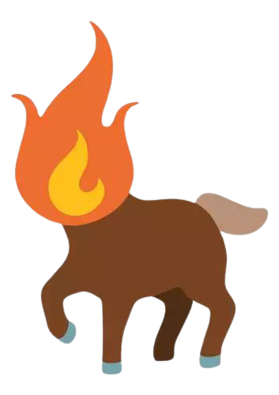
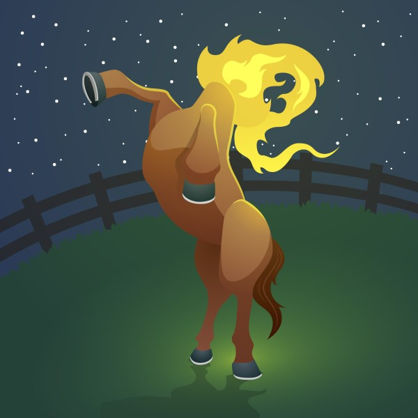
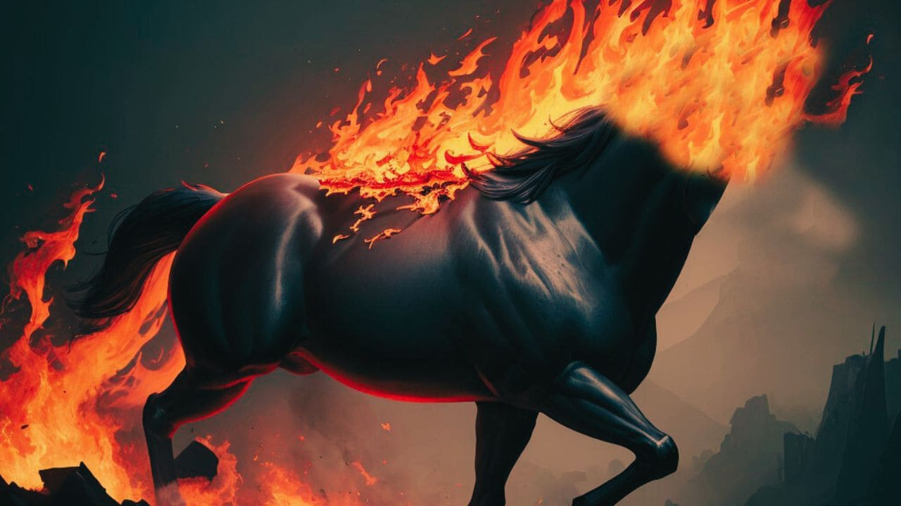

A Mula Sem Cabeça

Na vastidão das terras rurais do Brasil, onde o tempo parece ter um ritmo próprio e as histórias se entrelaçam com a vida cotidiana, há uma lenda que provoca arrepios nos corações dos que a ouvem: a lenda da Mula Sem Cabeça.
Dizem que a Mula Sem Cabeça é uma criatura sobrenatural, uma maldição que recai sobre mulheres que cometeram pecados graves, especialmente aquelas que se envolveram em relações amorosas proibidas. À meia-noite, nos dias de lua cheia, ela surge das sombras como uma égua negra com fogo saindo de seu pescoço cortado, relinchando alto e correndo descontroladamente pelos campos e estradas.
Há muitos anos, na pequena cidade de São Miguel, viveu Maria, uma jovem de beleza encantadora e espírito livre. Apaixonou-se perdidamente por um vaqueiro, João, cujo coração também se entregou à jovem. No entanto, Maria era prometida a outro homem, um fazendeiro rico e poderoso, cuja influência se estendia por toda a região.

Desafiando as convenções e o destino imposto, Maria e João se encontravam secretamente nas noites silenciosas, entre as sombras das árvores frondosas. O amor entre eles era tão intenso que nem mesmo as advertências dos mais velhos sobre a Mula Sem Cabeça podiam afastá-los.
Em uma noite de lua cheia, enquanto os amantes se reuniam no campo para se despedir, a Mula Sem Cabeça apareceu de repente, suas chamas ardentes iluminando a escuridão ao redor. Maria, consumida pelo medo e pelo desespero, tentou fugir, mas era tarde demais. A maldição a atingiu, transformando-a na terrível criatura que galopava desesperadamente pelos campos, soltando relinchos angustiados.
Desde então, a Mula Sem Cabeça passou a vagar pelas noites escuras da região, uma lembrança sombria das consequências do amor proibido e das escolhas erradas. Sua presença arrepiante recorda aos moradores locais a importância de respeitar as tradições e os valores da comunidade, pois cada ação tem suas consequências, mesmo que sejam tão terríveis quanto a maldição que assombra a pobre Maria.

Voltar A Seleção De Histórias
Jorge Vinicius Rocha Cantarinho 2°L